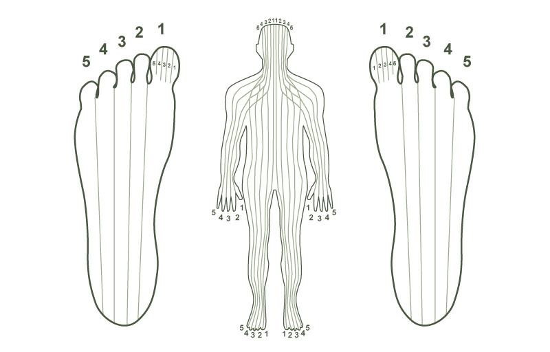

Reflexology dates all the way back to Ancient Egypt and China and is based on the principle that there are 10 energy zones running through the body from head to toe. This was discovered by Dr William Fitzgerald an ear nose and throat specialist in the 19th Century. While he was working he found out that he could relieve pain in one part of the patients body by applying pressure to another part. He then went on to apply pressure to the fingers with elastic bands and a small metal clamp which created local anaesthetic effects on the arm, side of the neck, eye ear and face.
The 10 zones are arranged in 5 pairs numbered 1-5 on each side of the body.

If you look at the foot chart you can see how the feet mirror the body The right foot mirrors the right side of the body and the left foot the left hand side. Put your two feet together and you have a complete outline of the human body starting at the big toes which represent the head and the lateral sides of the feet representing the outside of the body , the shoulders, knees and hips etc.
Reflexology has evolved from Dr Fitzgerald's day to become a kind of therapy that involves gentle compression of the 'reflex' areas on the feet which in turn mirror the organs, glands, and other part of the body. It is a holistic treatment, treating both the disease and the whole person which can enable the body's natural healing process to begin.
Reflexology can be used to help the body to heal itself and to maintain its natural healing process to restore a healthy balance.
Reflexology can bring relief to a large range of both acute and chronic conditions such as:
Back Pain, migraine, stress, digestive disorders, IBS, hormonal imbalances, fertility, Arthritis, neck and shoulder pain.
Reflexology is suitable for all ages, and I can tailor your needs for your age or condition.
Many people who have completed a course of treatments for a specific condition report a general feeling of relief and then go on to finding it beneficial to continue with regular treatments to maintain health and well-being both physically and mentally. Many doctors and health care professionals now recognise Reflexology as a well respected and effective therapy.
Initial appointment (approximately 90 minutes) - £30
Subsequent appointment (approximately 60 minutes) - £25